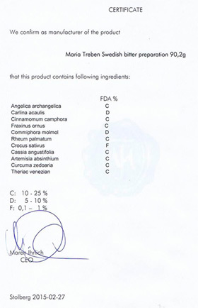

Описание товара
Не имеет аналогов в мире по оздоровительной силе и широте лечебных свойств
-
1978 г.
Европейцы используют шведскую горечь еще с 1978 года
-
104 года
104 года прожил автор бальзама
-
40 показаний
Больше 40 показаний к применению
-
24 языка
8 млн книг на 24 языках продано о бальзаме
Список болезней
Что из этого списка вы находите у себя?-
01. Сниженный тонус, не хватает энергии
-
02. Прыщи, бородавки и растяжки
-
03. Слабая память и концентрация
-
04. Болеете чаще раза в год?
-
05. Головные боли
-
-
06. Синяки, шишки, ожоги, порезы долго не проходят
-
07. Плохо засыпаете и часто просыпаетесь
-
08. Проблемы с желудком
-
09. Стресс
-
Более 2 000 покупателей доказали эффективность «Шведской горечи» в каждом из этих случаев
Читать отзывыПочему Шведская Горечь завоевала такую популярность?
Вот лишь несколько причин:
-
Эффективность как при наружном, так и внутреннем применении, более 40 показаний к применению
-
Случаи излечения с помощью сбора, когда традиционная медицина не смогла помочь
-
Постоянно выявляются новые цели- тельные свойства бальзама
-
Эффект от применения можно увидеть сразу
Даже в странах с очень высоким уровнем медицины, таких как Германия и Австрия, бальзам Шведская Горечь продается в каждой аптеке!
Получить средство-панацею к себе в аптечку
Удивительная история
возникновения бальзама
Далеко не у каждого лекарственного препарата есть такая удивительная история возникновения, уходящая к временам Парацельса, как у «Шведской горечи». Всю свою жизнь Парацельс искал эликсир долголетия!
Он экспериментировал с рецептами, в которых горькие коренья комбини- ровались комбинировались с разными лекарственными травами. Позднее в 18 веке на основа- нии основании оставшихся после Парацельса исследований шведский доктор Клауст Замст создал рецепт удивительного эликсира, который он принимал всю свою жизнь. Кстати, умер доктор Замст на 104-м году жизни, упав с лошади при верховой езде.
В конце прошлого века рецепт попал к известной австрийской травнице Марии Трэбэн, которая, изучив и дополнив его, популяризовала в странах Европы. Теперь сбор трав «Шведская горечь» помогает людям по всему миру.
Что вы получите
вместе
со сбором трав
«Шведская горечь»?
- 01 Сбор трав
- 02 Инструкция по применению
- 03 Сертификат качества
Состав «Шведской горечи»
Все травы, входящие в сбор, собраны в альпийском
запо- веднике «Гуркталь» и имеют немецкий сертификат
качества.
Строго выверенные пропорции каждого компонента в составе
- — 01 Angelica archangelica Корень дягиля (дудника) лекарственного
- — 02 Carlina acaulis
- — 03 Cunnamomum camphora
- — 04 Fraxinus ornus
- — 05 Cammiphora molmol
- — 06 Pheum palmatum
- — 07 Crocus sativus
- — 08 Cassia angustifolia
- — 09 Artemisia absinthium
- — 10 Curcuma zedoaria
- — 11 Theriak venezian Часть рецепта до сих пор находится в секрете
-
Все травы в составе бальзама обладают сильным очищающим воздействием, при этом каждый из компонентов усиливает дейс- твие остальных.
Соединяясь вместе они создают мощный очищающий эффект. Как оказалось, именно за счет этого эффекта бальзам способен исцелять многие болезни.
Заказать сбор трав
Вы принимаете участие в создании элексира
Приготовление бальзама потребует от вас минимум усилий. Достаточно залить травы 1,5 литрами водки и на- стоять в течение 14 дней ежедневно взбалтывая.
Но даже такое небольшое количество действий даст вам возможность почув- ствовать себя настоящим врачевателем и привнесет вашу энергетику в полу- чившийся целительный эликсир.
Настоя одной упаковки хватает на 4-5 месяцев Создать элексирмолодости и здоровья
Гарантия качества
Если бальзам вам не понравится, мы вернем деньги. Сразу и без лишних вопросов. Мы дорожим своей репутацией и уверены в продукте на 100%

Этот эликсир – именно то средство, которое вам всегда захочется иметь дома в аптечке и рекомен- довать своим близким.
К каждой упаковке «Шведской горечи» мы прикла- дываем немецкий сертифи- кат качества.
Заказать сбор трав
Отзывы о «Шведской горечи»
Если время от времени употреблять горечь, то вообще не будет болеть ОРЗ или ангинами. Младшему сыну я развожу раствор слабее (горечь, вода), он с удоволь- ствием пьет, иногда даже сам просит сделать ему го- речь. Только делаю меньше половины стакана, чтобы малыш смог выпить.
АнонимМоя семья на протяжение многих лет пользуется шведской горечью. При болях в горле мы полоскаем горечью. Когда температура я даю горечь и при этом мы не пользуемся таблетками.
НаталиЭтот сбор действительно очень хорошая вещь. Я его приобрела по совету своей тёти. Замечательно помогает при зубной боли, а также я его постоянно принимаю при простуде. Помогает хорошо и нет никакой химии.
ЮлияЯ покупаю уже готовый сбор шведский бальзам. Отказались от многих лекарственных препаратов благодаря бальзаму. Так что могу только посоветовать самим попробовать, это стоит того.
ЕвгенийЧитать еще отзывы
Присоединиться к тем,
кто решил свои проблемы